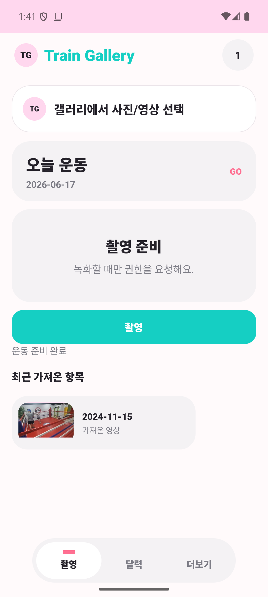
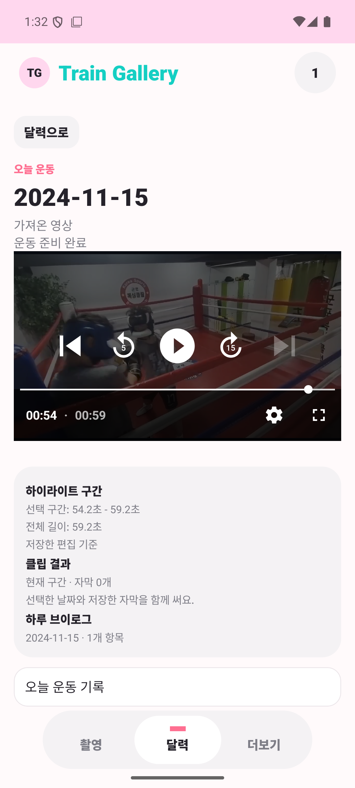
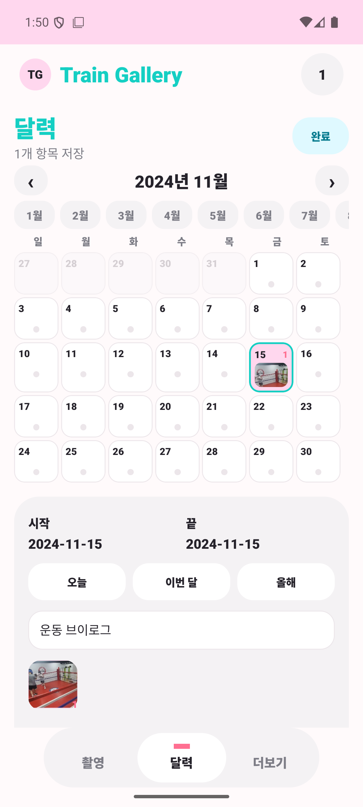

메인 검색 화면에서 종목 검색창, 테마와 산업군 빠른 탐색, 필터 공간을 위에서 아래로 바로 이해할 수 있게 정리했습니다.테마를 선택하면 검색 제안, 적용된 필터, 종목 비교 표가 함께 보여서 결과를 좁혀가는 흐름이 한 번에 이어집니다.종목 상세에서는 120일 차트, 이동평균선, 박스 상하단, 필터 근거를 같이 보여줘서 공개 검색 사이트에서도 비교 기준을 설명할 수 있게 했습니다.
웹 기반 MCU 가상화 학습 환경
VIRTUAL MCU EDUCATION
브라우저에서 C 코드를 실행하고 GPIO, register, graph, log 변화를 함께 보는 학습용 MCU 시뮬레이터입니다.
사용자 입장에서는 하드웨어 없이 MCU 동작을 같이 보며 배우는 학습 도구입니다.
브라우저에서 코드를 바꾸고 바로 실행해 반응 차이를 확인할 수 있습니다.
회로, register, graph, log가 한 화면에 연결되어 보여서 학습 흐름이 끊기지 않습니다.
실습 장비가 없어도 동작 원리를 단계별로 확인할 수 있게 구성했습니다.
실제 자동차 개발 아이템을 가상 환경에서 다뤄볼 수 있도록, 데이터시트와 실제 코드 기반으로 디버깅하면서 전압과 동작 반응을 확인하는 가상 교육환경을 만들었습니다.
스택웹 UI, C 코드 에디터, 가상 MCU 상태 모델, schematic, register, graph, log 표시
핵심 기능
기능 1
코드 작성과 실행
브라우저 안에서 코드를 바로 바꾸고 실행해 결과를 확인할 수 있습니다. 코드를 바꿨을 때 하드웨어 반응이 어떻게 달라지는지가 바로 이어집니다.
기능 2
회로와 상태 시각화
schematic, pin 상태, register 값, graph를 따로 보지 않고 한 자리에서 연결해 보이게 했습니다.
기능 3
설명용 학습 루프
실행 결과를 log로만 끝내지 않고, 왜 이런 반응이 나왔는지 화면 요소별로 다시 읽을 수 있게 만들었습니다.
화면
메인 화면에서는 어떤 실습을 시작할지 고르고, 바로 코드 실행 화면으로 넘어가게 구성했습니다.코드 편집기와 실행 결과가 붙어 있어, 수정한 코드가 어떤 반응을 만들었는지 바로 확인할 수 있습니다.register, pin, graph 화면은 실행 중 바뀌는 값을 추적하면서 하드웨어 반응 원리를 설명하는 데 쓰입니다.
로컬 퍼스트 운동 영상 기록 앱
TRAIN GALLERY
운동 영상을 날짜별로 기록하고 클립·하이라이트 export를 제공하는 앱입니다.
사용자 입장에서는 운동 영상을 기록하고 다시 꺼내 쓰기 쉽게 만든 앱입니다.
날짜별로 영상을 모아 두어 어떤 날 어떤 운동을 했는지 다시 찾기 쉽습니다.
필요한 구간만 클립으로 잘라 저장하고 하이라이트 결과물까지 바로 만들 수 있습니다.
로컬 중심 구조라 필요한 영상만 골라 관리하고 export 흐름까지 이어갈 수 있습니다.
운동 기록 앱은 화면만 예쁘게 만드는 일보다 로컬 미디어 접근, 캘린더 정리, 클립 저장, 공유 시트 연결이 끊기지 않는 것이 더 중요했습니다.
Android 릴리즈 APK 기준으로 Capture, Calendar, Detail, clip export, day/month/year highlight export까지 로컬 검증 기록을 남겼습니다.
갤러리에서 고른 영상만 가져오고, 앱 안에서 촬영한 영상도 날짜 기준으로 바로 묶어 기록합니다. 원본 전체를 스캔하지 않고 필요한 미디어만 다룹니다.
기능 2
달력 중심 기록 정리
운동 영상을 날짜 단위로 모으고, 월·연 단위 누적 흐름까지 같은 화면에서 이어서 봅니다. 어떤 날에 무엇이 남았는지 빠르게 다시 찾을 수 있게 만들었습니다.
기능 3
클립, 자막, 하이라이트 export
선택한 구간을 클립으로 저장하고 자막을 얹은 뒤 공유 시트로 넘길 수 있게 했습니다. 하루 운동, 월별, 연도별 highlight도 앱 안에서 바로 export 흐름으로 연결했습니다.
화면

기록 시작 화면에서 오늘 운동 카드, 촬영 버튼, 최근 가져온 항목을 한 화면에 묶어 바로 기록 흐름으로 들어가게 구성했습니다.달력 화면에서는 날짜별 기록 수, 썸네일, 이동 흐름을 함께 보여줘서 운동 기록을 목록이 아니라 캘린더 맥락으로 다시 찾을 수 있습니다.

상세 화면에서 선택 구간, 자막, 하루 브이로그 요약까지 이어서 확인하며 클립과 highlight export를 같은 작업 맥락에서 처리합니다.

day highlight export 화면까지 같이 넣어, 기록 정리에서 끝나지 않고 실제 결과물을 꺼내는 흐름도 바로 보이게 했습니다.
Jira 경량 작업공간 / 리뷰 관리
JIRA MINI
검색, 빠른 수정, 댓글, 첨부 검토를 한 화면에서 처리하는 Jira 보조 도구입니다.
사용자 입장에서는 Jira에서 자주 하는 작업만 가볍게 묶어 둔 보조 작업공간입니다.
이슈를 찾고 상태를 확인하는 흐름을 한 화면에서 빠르게 이어갈 수 있습니다.
목록에서 바로 담당자, 상태, 일정 등을 수정해 상세 화면 이동을 줄였습니다.
본문, 댓글, 첨부 확인까지 이어져 리뷰와 관리 작업을 덜 끊기게 만듭니다.
기존 Jira 화면의 무거운 부분은 덜어내고 필요한 기능만 살려, 프로젝트 이슈 관리와 작업 진행상황 확인을 리뷰어와 사용자 모두 편하게 할 수 있는 앱을 만들었습니다.
스택React UI, Jira 연동, 목록 빠른 수정, 본문 편집기, 댓글/첨부/최근 활동 표시
핵심 기능
기능 1
검색과 목록 가시성 강화
업무명, 담당자, 상태를 기준으로 찾고 상위 업무를 접고 펼치며 여러 하위 작업의 진행 흐름을 한눈에 봅니다.
기능 2
목록에서 바로 수정
상태, 담당자, 보고자, 일정 같은 관리 필드는 상세 페이지로 이동하지 않고 목록 흐름 안에서 바로 바꿀 수 있습니다.
기능 3
본문 편집과 첨부 검토
상세 화면에서는 Jira 본문 서식, 표, 차트, 이미지 첨부를 보면서 수정과 검토를 같은 맥락에서 진행합니다.
기능 4
AI 서브태스크 초안
하위 작업을 추가할 때 AI가 제목, 상세 내용, 완료 기준을 일정한 형식으로 정리해 작업 품질 편차를 줄입니다.
기능 5
댓글 기반 진척 확인
일반, 진척도, 리뷰 댓글을 나누어 남기고 최근 활동 기록을 기반으로 업데이트 여부를 빠르게 판단합니다.
화면
검색, 상태 필터, 상위 업무 접기/펼치기로 여러 하위 작업을 먼저 좁혀 봅니다.목록 화면에서 하위 추가 버튼을 바로 눌러 서브태스크 초안 흐름으로 이어가고, 상태와 일정도 같은 자리에서 확인합니다.상세 화면에서는 상태, 담당자, 일정, 본문, 첨부, 댓글 영역을 함께 보며 검토 흐름을 이어갑니다.일반, 진척도, 리뷰 댓글과 첨부 기록을 분리해 최근 활동을 빠르게 확인합니다.
로컬 자동매매 운영 워크벤치
AUTO TARDING
키움 OpenAPI 기반 자동매매 운영 도구입니다. 실행 후보, 차단 사유, 보유·체결 흐름을 분리해 보여줍니다.
사용자 입장에서는 자동매매를 바로 실행하기보다 현재 상태를 먼저 이해하게 돕는 운영 도구입니다.
실행 후보가 왜 대기인지, 왜 차단됐는지 한 화면에서 바로 확인할 수 있습니다.
보유 종목과 최근 체결 내역을 함께 보여줘 운영 판단 흐름을 끊지 않습니다.
추천 화면과 실제 실행 판단을 분리해 로컬에서 신중하게 검토하도록 구성했습니다.
후보 탐색 정보와 실주문 조건이 한 화면에서 섞이면 왜 대기인지, 왜 차단됐는지, 지금 무엇을 눌러도 되는지 바로 읽기 어려웠습니다.
스택Kiwoom OpenAPI, PyQt desktop UI, candidate snapshot, readiness gate, position state, order log
핵심 기능
기능 1
실행 후보 상태 보드
signal, setup, execution, CTX, preclose 상태를 한 표에 모아 자동매매 후보를 넓게 보는 화면이 아니라 실행 전 검토 보드처럼 읽히게 했습니다.
기능 2
차단 사유와 readiness 게이트
unsupported setup, execution status blocked, context 약화 같은 이유를 block memo로 남겨서 분석 결과가 바로 주문 버튼으로 이어지지 않게 분리했습니다.
기능 3
보유·체결·운영 로그
보유 포지션, 최근 체결, 운영 로그를 같은 탭 안에 두어 현재 상태 확인과 사후 복기를 한 화면에서 이어갈 수 있게 구성했습니다.
화면
로컬 KIWOM 자동매매 화면은 후보 상태, execution, CTX, block memo, 보유 포지션, 최근 체결 로그를 한 화면에 묶어 운영 판단과 주문 실행을 분리합니다.
로컬 에이전트 운영 콘솔
CODEX TEAM
요청, 승인, 검토, 근거를 한 화면에서 관리하는 로컬 AI 작업 콘솔입니다.
사용자 입장에서는 여러 AI 작업을 배분하고 확인하는 운영 콘솔입니다.
누가 어떤 작업을 맡았는지와 지금 막힌 지점을 한 자리에서 파악할 수 있습니다.
승인, 인수인계, 검토 흔적이 남아 중간에 다시 들어와도 흐름을 잃지 않습니다.
사람 판단과 AI 실행을 분리해 로컬 작업을 더 안정적으로 관리하게 돕습니다.
AI 작업이 여러 갈래로 흩어지면 지금 무엇이 막혔는지, 누가 확인해야 하는지, 언제 사람이 개입해야 하는지 다시 찾기 어려웠습니다.
스택Codex thread 운영, 역할 보드, issue/discussion/decision 흐름, approval, evidence 기록
역할 구조
역할 1
Operator
전체 구현보다 개입 시점과 위험을 봅니다. 언제 승인하고 언제 보류할지, 어떤 검토가 먼저인지 판단하는 자리입니다.
역할 2
Chief
요청을 해석하고 팀을 나눕니다. issue, meeting, staffing, escalation이 생기면 누가 이어받을지와 어떤 후속 조치가 필요한지 결정합니다.
역할 3
Specialists / Review
planner, implementer, tester, reviewer가 좁은 역할로 나뉘어 일하고 결과는 approval과 evidence까지 남겨 재진입 가능한 기록으로 바뀝니다.
화면
조직 설계 탭에서 chief, tester, reviewer 같은 역할을 어떻게 배치했는지와 부족한 역할이 무엇인지 바로 읽을 수 있습니다.활동 기록 탭에서는 에이전트 추가, 인수인계, escalation, review 흔적이 시간순으로 이어져 사람과 AI가 어떻게 소통했는지 보입니다.
일상 생활 자동화 흐름
일상 생활 자동화 에이전트
프로젝트 진행과 학습 과정에서 반복되는 실행, 검색, 정리, 리뷰를 Agent 흐름으로 나눈 기록입니다.
사용자 입장에서는 반복 작업을 역할별로 나눠 다시 쓰기 쉽게 만든 묶음입니다.
Discord Agent로 외부 요청과 결과 확인을 같은 채널에서 이어갈 수 있습니다.
Git Researcher로 GitHub 조사 후보를 좁히고 관련 저장소를 정리합니다.
논문 에이전트로 요약과 지식 축적 흐름을 이어가며 다시 검색 비용을 줄입니다.
Review Agent로 lint, 의존성, dead code 점검을 한 번에 확인합니다.
일상 생활 자동화 에이전트
01
Discord Agent
외부에서도 Discord 메시지로 Codex 작업을 요청하고, 실제 실행은 로컬 Codex 서버가 처리하도록 만든 원격 작업 도구입니다.
구성
Discord 입력 채널, 로컬 Codex 서버, 프로젝트 연결, thread 재개, 첨부 저장, 실행 상태 추적
편한 점
PC 앞에 있지 않아도 작업 요청, 첨부 전달, 결과 확인을 같은 채널에서 이어갈 수 있습니다.
차이점
Discord는 입력과 승인 창만 맡고, 프로젝트 연결, thread 재개, 파일 저장, 실행 상태 추적은 로컬 서버가 관리합니다.
02
Git Researcher
GitHub에서 AI agent, MCP, harness 관련 프로젝트를 찾을 때 관련도 높은 저장소만 남기도록 만든 조사 도구입니다.
구성
GitHub Search API, README 원문 분석, 저장소 메타데이터, 제외 규칙, 키워드 라벨, 후보 기록
편한 점
그냥 Codex에게 검색을 맡기는 것보다 검색 조건, 제외 규칙, README 근거, 저장소 메타데이터가 남아 결과를 다시 검토하기 쉽습니다.
차이점
`fork:false`, star 기준, 최근 업데이트, 반복 제외, README 키워드 라벨을 같이 적용해 유명하지만 무관한 repo와 오래된 후보를 줄입니다.
03
논문 에이전트
논문을 한 번 묻고 끝내지 않고, 핵심 주장, 근거, 관련 개념, 다음 질문을 지식 저장소에 쌓아 다시 쓰게 만든 연구 보조 도구입니다.
구성
PDF 요약, paper distill, openkb 지식 저장소, 개념 노트, 압축 근거, validator
편한 점
논문마다 다시 처음부터 설명을 요청하지 않아도, 이전에 읽은 요약과 근거 노트를 바탕으로 다음 논문 비교와 초안 작성이 이어집니다.
차이점
PDF 요약만 하는 것이 아니라 검색 세션, 개념 노트, 압축 근거, 챕터 상태를 나누어 저장하고 validator로 누락을 확인합니다.
04
Review Agent
AI로 만든 Python 프로그램의 코드 품질을 올리기 위해 lint, 의존성, dead code를 한 번에 검사하는 리뷰 에이전트입니다.